Branding e identidad visual
Sistemas de marca coherentes: logotipo, paleta, tipografía y aplicaciones.
Visión sin límites — diseño, branding y arte digital con identidad propia.
ExplorarSofia
Zabala
{ Creamos tu propio universo }
Diseño que convierte ideas en universos propios.

Creo identidades visuales, experiencias digitales y contenido creativo para marcas que buscan destacar. Combinando diseño, storytelling y experimentación visual, transformo ideas en identidades auténticas, memorables y vibrantes.
Sistemas de marca coherentes: logotipo, paleta, tipografía y aplicaciones.
Piezas en video y motion graphics que dan movimiento y voz a la marca.
Sitios web e interfaces interactivas pensadas para el usuario.
Arte e ilustraciones a medida con un lenguaje visual propio.
Conceptos creativos y piezas para campañas en medios digitales.
Procesos de diseño impulsados por inteligencia artificial para crear con más alcance.
Narrativas memorables que conectan emocionalmente con la audiencia.
Esperando un vinilo
✦ Encontraste un secreto ✦
Protege mi galaxia de los invasores.
Mueve el mouse o el dedo · Disparo automático · P para pausar
Diseñamos el mundo y los personajes de un juego de acción de otro universo: un reino donde la realeza tiene el poder de dominar bestias. A mí me correspondió diseñar a la Reina y a la Pantera, el animal espiritual del príncipe. Esta es una pequeña muestra de su proceso en 3D.
Estudio de manos y pies en distintas vistas como base para modelar extremidades creíbles.
Cabeza estilizada con orejas de elfa y cuerpo base en pose T, de frente y de perfil.
Esculpido del cuerpo de la Reina y de la Pantera, y retopología a low poly para que funcionen en el juego.
Vestido low poly de la Reina con armadura en hombros, corsé y faldón, y una corona con gemas.
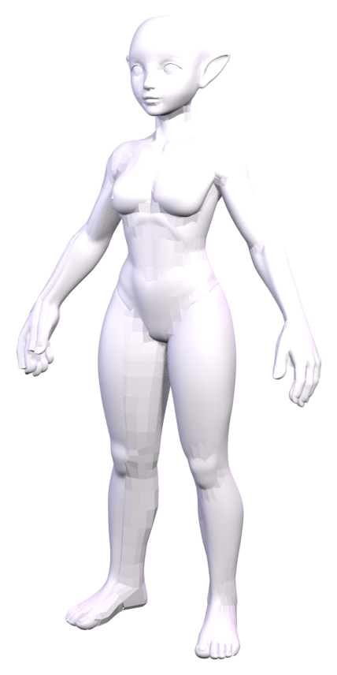
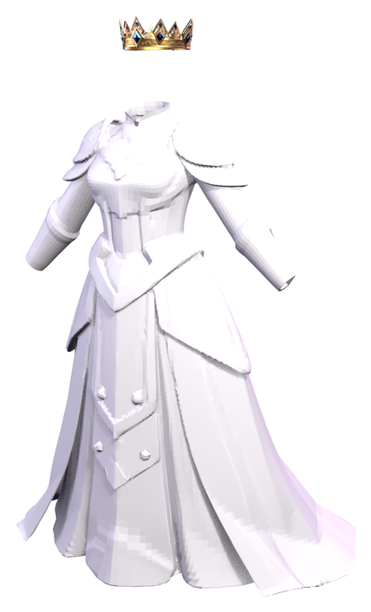
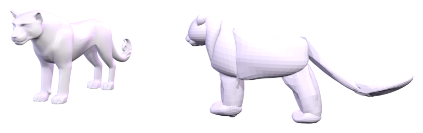
Escultura de referencia (izquierda) y retopología low poly (derecha).
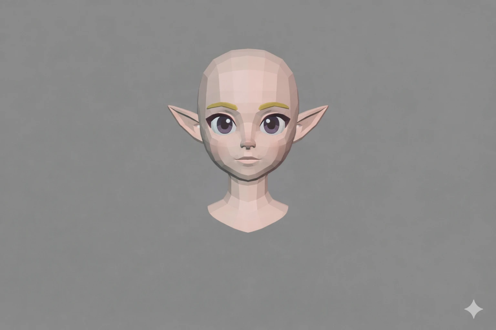
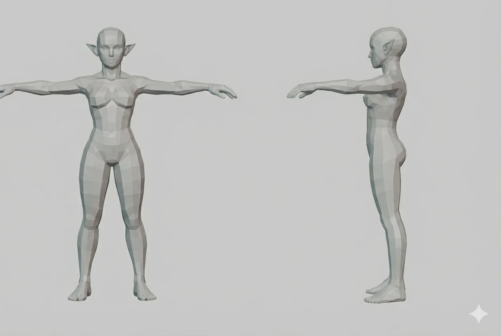
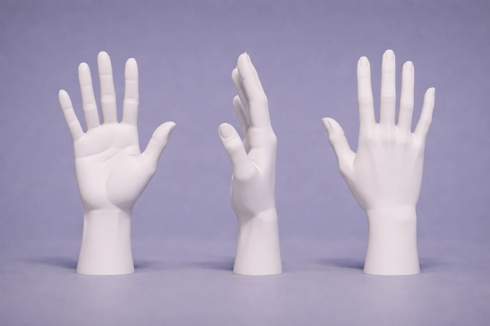
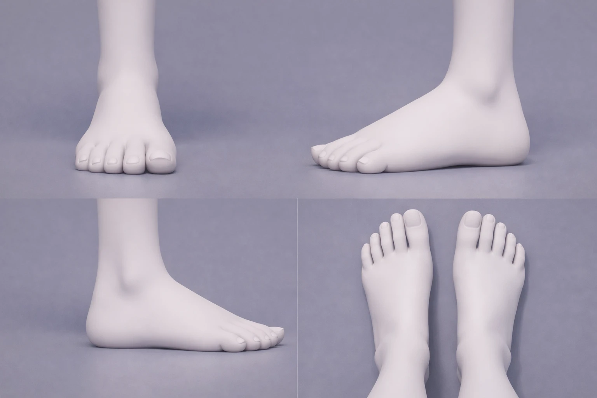
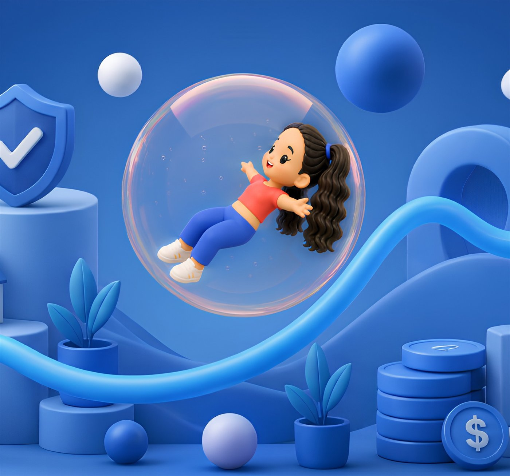
Con mi equipo, MSJ Digital Studio, participamos en el Global Hack 2026, un concurso de innovación de Global Seguros con el Design Factory Javeriana Bogotá. El reto: rediseñar el journey digital del Seguro Educativo para las familias en Colombia. Nuestra propuesta fue Línea Segura: “Seguro que te ayuda a crecer”. Entre los equipos de todas las universidades de la ciudad que participaron, quedamos en 3.er lugar.
7 de cada 10 personas que cotizan un seguro educativo abandonan antes de pagar. No por falta de interés, sino por fricción: un formulario de 7 campos, 7 productos sin guía y respuestas que tardan más de 24 horas.
Mamá de 33 años que navega desde el celular en momentos cortos, valida todo con otras madres y desconfía del lenguaje técnico. “Yo sí quiero pagar, pero nadie me explica claro.”
Una línea que atraviesa los obstáculos (mitos, desconfianza, trámites) mientras la burbuja de Global Seguros protege a la hija en cada etapa de su crecimiento, hasta su meta educativa.
Cinco etapas: un reel que conecta, un quiz de 3 preguntas con el precio visible, WhatsApp con un asesor real en menos de 2 horas, pago en 3 pasos con comprobante y mensajes en los hitos del hijo.
Un mundo 3D minimalista en azules: la línea fluida es la vida, el escudo la protección y las monedas el crecimiento. Paola y su hija son personajes 3D que acompañan cada pieza.
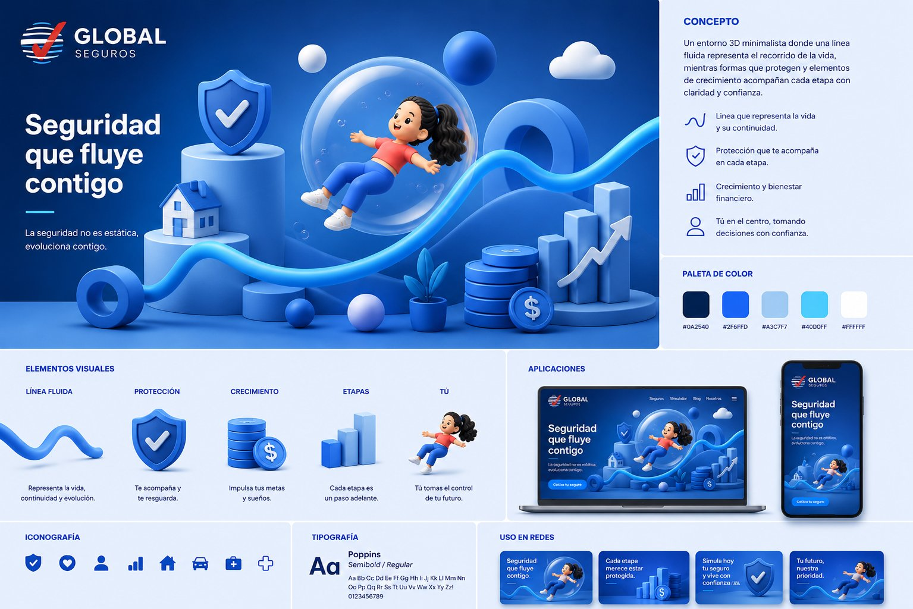
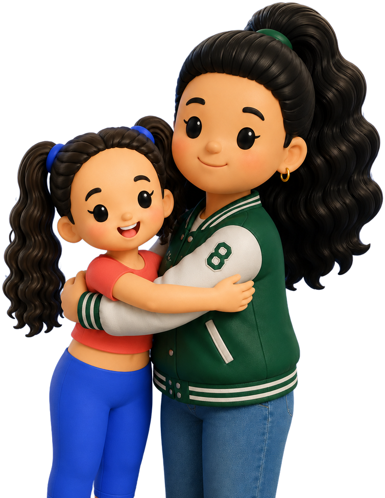
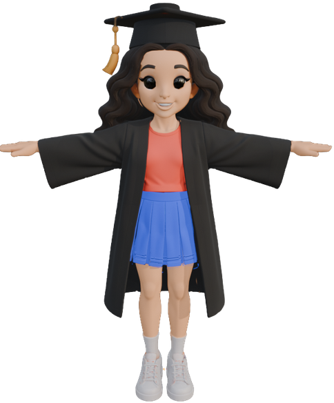
Creamos un cortometraje de drama y suspenso sobre un chico que, al inicio, parece estar hablando solo… pero en realidad no es lo que parece. Teníamos solo 13 segundos para contar la historia: todo un desafío que logramos completar, con la dirección y la producción hechas de forma profesional.
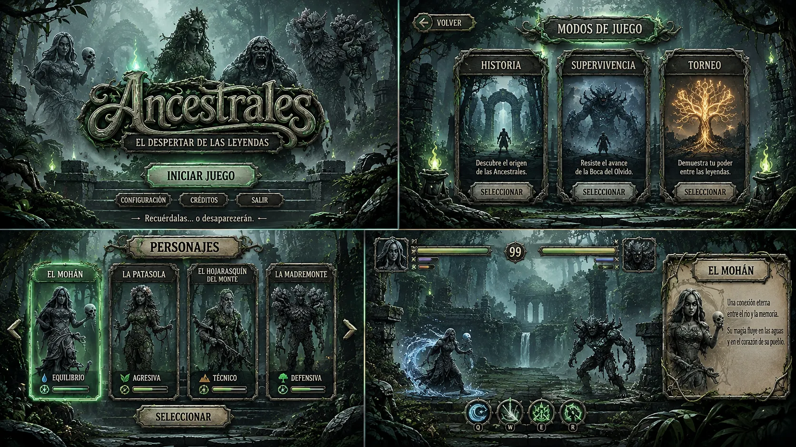
Ancestrales: El despertar de las leyendas es un juego de pelea basado en las figuras de la colección Ancestrales de Quinteplast. Cuando Colombia olvida sus leyendas, la Boca del Olvido empieza a tragarse sus regiones, y las leyendas deben pelear entre ellas por la magia que queda: quien gana se vuelve oro y salva su tierra; quien pierde se vuelve piedra.
Cada región de Colombia existe gracias a la leyenda que la protege; si su historia se olvida, el lugar desaparece. De ahí nace la amenaza: la Boca del Olvido.
Cuatro momentos: el despertar, el conflicto, la última pelea y el recuerdo. Ninguna leyenda es villana: todas pelean por salvar su tierra.
Los luchadores son las figuras de la colección: El Mohán (río), La Patasola (selva), El Hojarasquín del Monte (monte) y La Madremonte (montaña), cada uno con su estilo de pelea.
Mejor de 3 rounds con especiales y un remate propio. El escenario pierde color mientras avanza la Boca, y el final invita a despertar a las leyendas con el QR de cada figura.
Fantasía oscura de inspiración folclórica colombiana: entornos 3D en 2.5D, piedra, vegetación y magia verde, con una estética cinematográfica. Eslogan: “Recuérdalas… o desaparecerán.”
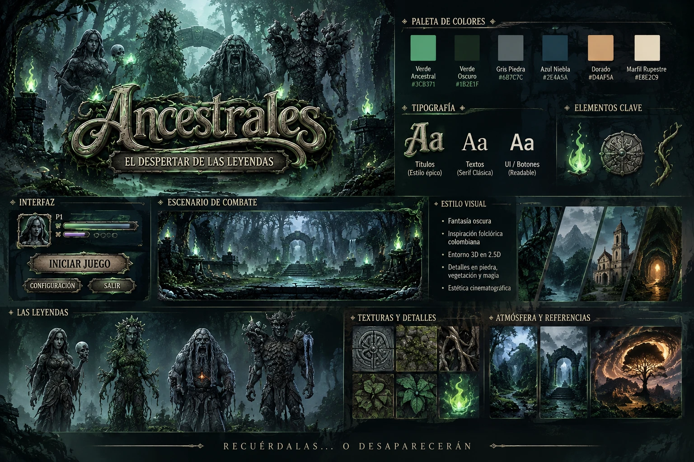
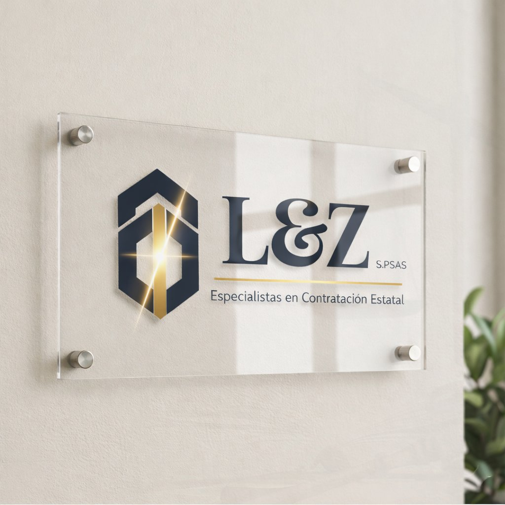
Creé desde cero la identidad visual de L&Z, una firma especialista en contratación estatal, a gusto del cliente: en cada junta corregimos y rediseñamos hasta lograr lo que la firma buscaba transmitir, confianza, solidez y respaldo. Eslogan: “L&Z, tu mejor aliado en contratación.”
La justicia como punto de partida: la balanza y la figura de la justicia guiaron el tono serio y confiable de la marca.
Un monograma geométrico que une la L y la Z en un escudo, atravesado por un trazo de luz.
En cada reunión el cliente revisaba las versiones y yo corregía forma, proporción y detalles hasta llegar a la versión final.
Paleta en azul profundo, dorado y blanco, y sus aplicaciones: papelería, tarjetas, brochure, taza y señalética.
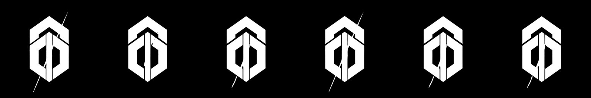
Algunas de las versiones del símbolo que fuimos ajustando junta a junta.
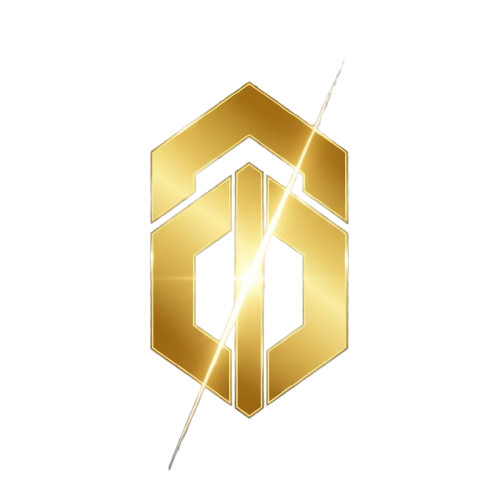
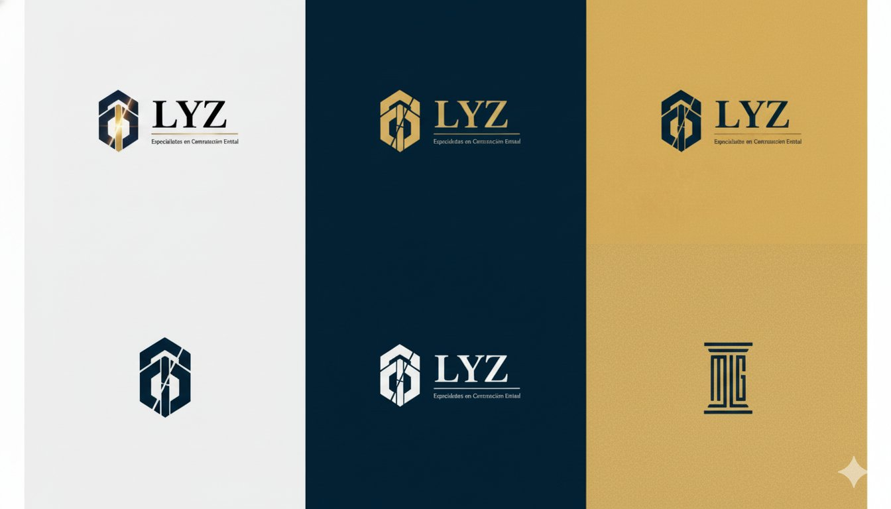
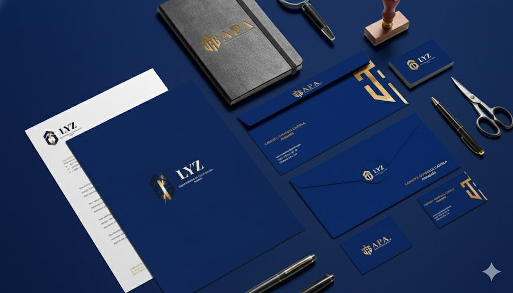
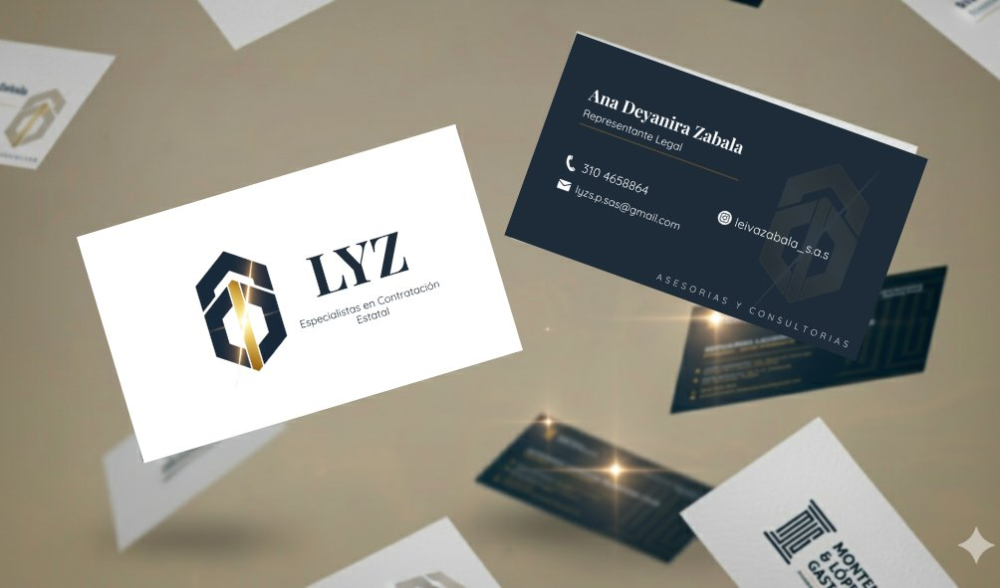
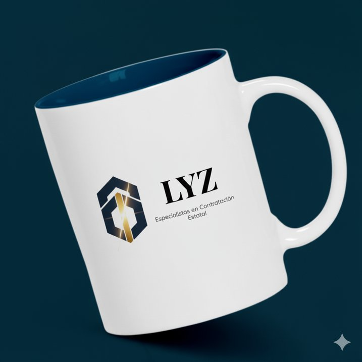
Diseñamos y creamos una app de turismo para las personas que viajan y quieren conocer el Eje Cafetero: tienen una guía personalizada que las acompaña en todo momento durante su viaje.
Ver el prototipo en Figma ↗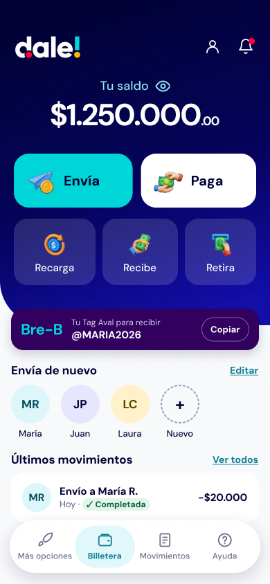
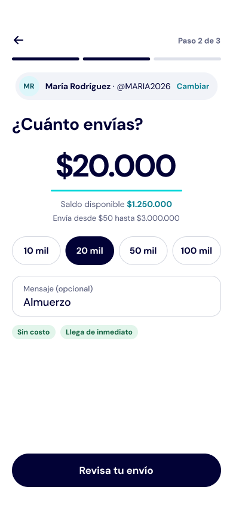
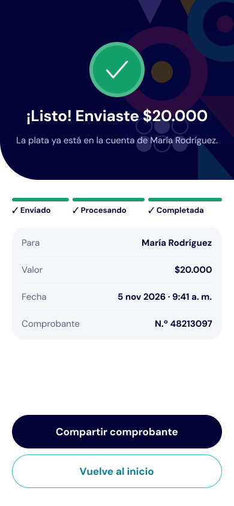
dale! es una billetera digital colombiana. Investigamos cómo la usan estudiantes y jóvenes trabajadores en su día a día, dónde se les complica y por qué prefieren (o no) otras billeteras. Con esos hallazgos encontramos los dolores de la app y construimos una propuesta de mejora.
Encuesta a 43 personas, diary study de 5 días con 3 participantes y 8 entrevistas. Cruzamos los tres métodos para entender cuándo y para qué abren la app.
dale! se usa por necesidad, no por hábito. Cuesta encontrar las funciones (facilidad 2,2/5), los banners distraen y da miedo equivocarse de persona o de monto al enviar.
Con heatmaps, un funnel AARRR y 5 hipótesis priorizamos los problemas. En una prueba A/B, el flujo nuevo subió los datos correctos de 50 % a 100 % y la confianza de 3,5 a 4,5.
Prototipo en Figma: Envía y Paga grandes arriba, llave con nombre verificado, confirmación con huella y estados claros. También hicimos una auditoría de accesibilidad (WCAG).
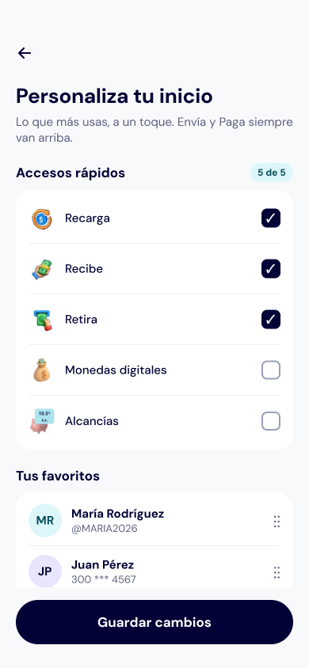
Lo que más se usa, a un toque: cada persona elige sus accesos rápidos y favoritos, y Envía y Paga siempre van arriba.
Ver el prototipo en Figma ↗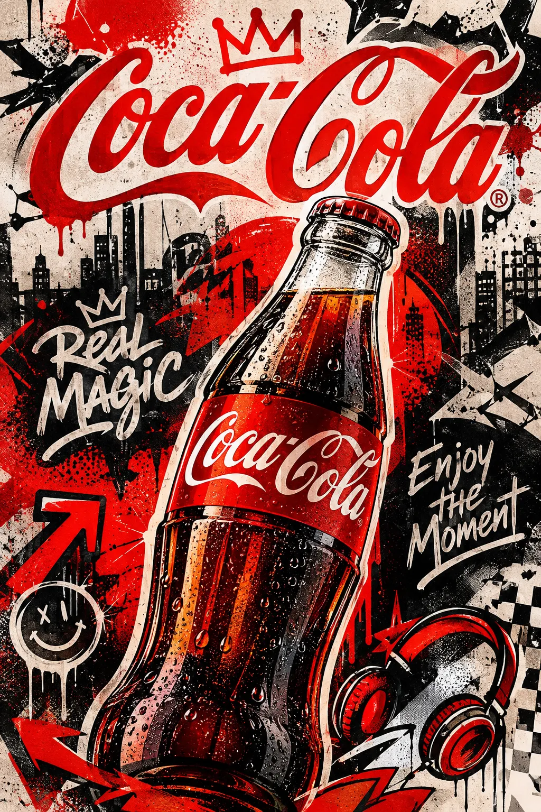
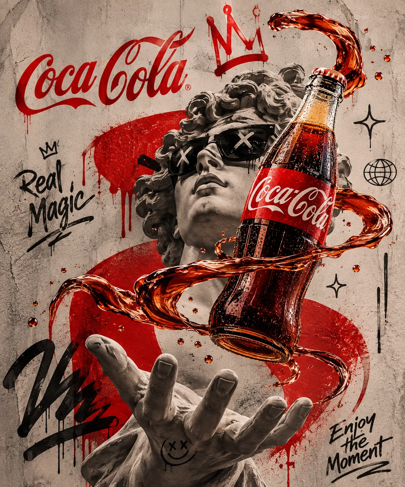
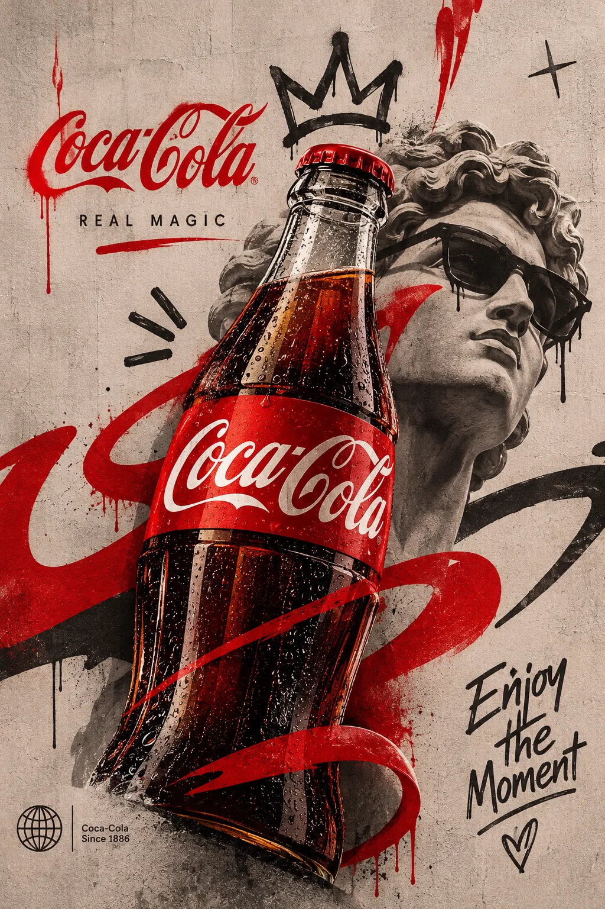
Una serie de propuestas gráficas para una campaña de Coca-Cola que explora una dirección distinta a su publicidad tradicional: reinterpretar su identidad comercial con una estética streetwear, tomando como referente el universo gráfico de Stüssy y la cultura urbana (graffiti, arte callejero y expresión juvenil).
✦ Finalmente, mis propuestas fueron las seleccionadas.
Que Coca-Cola conservara su identidad y sus elementos más representativos, pero ganara una personalidad más atrevida, artística y contemporánea. Experimenté con composiciones, lettering, ilustración, texturas, trazos manuales y recursos del lenguaje urbano, integrándolos en equilibrio sin perder el reconocimiento de la marca.
Exploración de conceptos y primeros bocetos.
Pruebas de distribución entre botella, logo y lettering.
Coronas, splashes, carita, ajedrezado y trazos del lenguaje street.
Cada diseño con intención propia: la esencia de la marca en clave experimental.
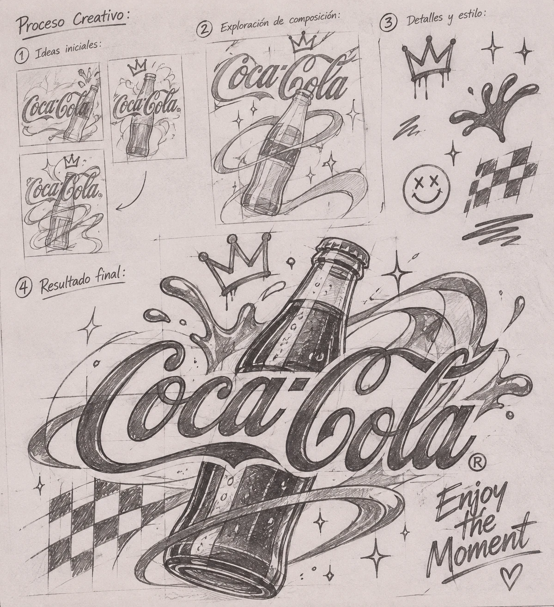
Una exploración gráfica que demuestra cómo una marca tradicional puede reinventar su comunicación visual y conectar con nuevas audiencias a través del diseño.